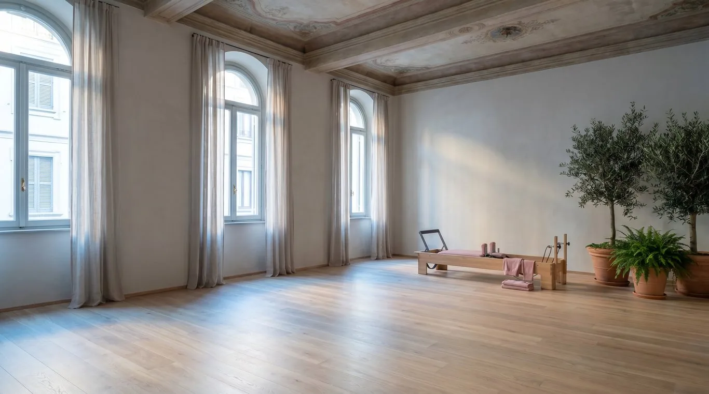
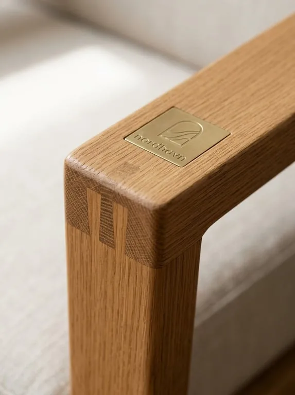

Linden, homes in old Tel Aviv
Homes with good light.
We sell a few apartments at a time, in buildings from the thirties to the sixties, and we visit every one before we list it.
Each listing says which way the windows face, what the stairs are like and what the neighbours told us.
See the homes
For sale now
Four homes, each visited twice.
- 01
Rothschild 61
₪6,900,000
Open house Friday
- 02

Melchett 14
₪4,350,000
Available
- 03

Bialik 9
₪3,600,000
Available
- 04

Engel 3
₪8,200,000
Under offer
How we work
Slow on purpose, so nothing surprises you later.
We visit
Twice, at morning and at evening light, before we agree to sell a home.
We write it down
Every defect we found goes into the listing, so buyers come already knowing.
We show it
One open house a week, and private visits for people who ask.
We close it
Our lawyer prepares the contract and we stay until the keys change hands.
Tell us what you’re looking for.
Leave a number and the hours that suit you, and one of us will call that day.